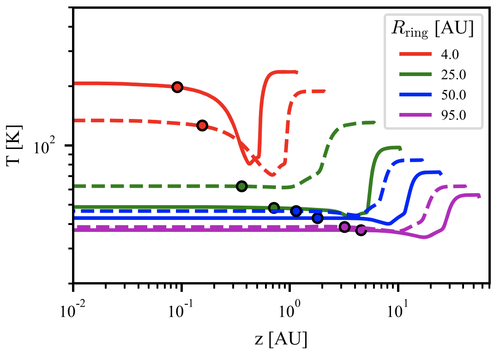

Papers
-
MAPS XIV. Revealing Disk Substructures in Multiwavelength Continuum Emission
Sierra et al. 2021
Abstract: Constraining dust properties of planet-forming disks via high angular resolution observations is fundamental to understanding how solids are trapped in substructures and how dust growth may be favored or accelerated therein. We use ALMA dust continuum observations of the Molecules with ALMA at Planet-forming Scales (MAPS) disks and explore a large parameter space to constrain the radial distribution of solid mass and maximum grain size in each disk, including or excluding dust scattering. In the nonscattering model, the dust surface density and maximum grain size profiles decrease from the inner disks to the outer disks, with local maxima at the bright ring locations, as expected from dust trapping models. The inferred maximum grain sizes from the inner to outer disks decrease from 1 cm to 1 mm. For IM Lup, HD 163296, and MWC 480 in the scattering model, two solutions are compatible with their observed inner disk emission: one solution corresponding to a maximum grain size of a few millimeters (similar to the nonscattering model), and the other corresponding to a few hundred micrometer sizes. Based on the estimated Toomre parameter, only IM Lup – which shows a prominent spiral morphology in millimeter dust – is found to be gravitationally unstable. The estimated maximum Stokes number in all the disks lies between 0.01 and 0.3, and the estimated turbulence parameters in the rings of AS 209 and HD 163296 are close to the threshold where dust growth is limited by turbulent fragmentation. This paper is part of the MAPS special issue of the Astrophysical Journal Supplement.
Read Paper -

MAPS I. Program Overview and Highlights
Oberg et al. (2021)
Abstract: Planets form and obtain their compositions in dust and gas-rich disks around young stars, and the outcome of this process is intimately linked to the disk chemical properties. The distributions of molecules across disks regulate the elemental compositions of planets, including C/N/O/S ratios and metallicity (O/H and C/H), as well as access to water and prebiotically relevant organics. Emission from molecules also encodes information on disk ionization levels, temperature structures, kinematics, and gas surface densities, which are all key ingredients of disk evolution and planet formation models. The Molecules with ALMA at Planet-forming Scales (MAPS) ALMA Large Program was designed to expand our understanding of the chemistry of planet formation by exploring disk chemical structures down to 10 au scales. The MAPS program focuses on five disks – around IM Lup, GM Aur, AS 209, HD 163296, and MWC 480 – in which dust substructures are detected and planet formation appears to be ongoing. We observed these disks in 4 spectral setups, which together cover ∼50 lines from over 20 different species. This paper introduces the ApJS MAPS Special Issue by presenting an overview of the program motivation, disk sample, observational details, and calibration strategy. We also highlight key results, including discoveries of links between dust, gas, and chemical sub-structures, large reservoirs of nitriles and other organics in the inner disk regions, and elevated C/O ratios across most disks. We discuss how this collection of results is reshaping our view of the chemistry of planet formation.
Read Paper -

MAPS III. Characteristics of Radial Chemical Substructures
Law et al. (2021a)
Abstract: The Molecules with ALMA at Planet-forming Scales (MAPS) Large Program provides a detailed, high resolution (∼10–20 au) view of molecular line emission in five protoplanetary disks at spatial scales relevant for planet formation. Here, we present a systematic analysis of chemical substructures in 18 molecular lines toward the MAPS sources: IM Lup, GM Aur, AS 209, HD 163296, and MWC 480. We identify more than 200 chemical substructures, which are found at nearly all radii where line emission is detected. A wide diversity of radial morphologies — including rings, gaps, and plateaus — is observed both within each disk and across the MAPS sample. This diversity in line emission profiles is also present in the innermost 50 au. Overall, this suggests that planets form in varied chemical environments both across disks and at different radii within the same disk. Interior to 150 au, the majority of chemical substructures across the MAPS disks are spatially coincident with substructures in the millimeter continuum, indicative of physical and chemical links between the disk midplane and warm, elevated molecular emission layers. Some chemical substructures in the inner disk and most chemical substructures exterior to 150 au cannot be directly linked to dust substructure, however, which indicates that there are also other causes of chemical substructures, such as snowlines, gradients in UV photon fluxes, ionization, and radially-varying elemental ratios. This implies that chemical substructures could be developed into powerful probes of different disk characteristics, in addition to influencing the environments within which planets assemble. This paper is part of the MAPS special issue of the Astrophysical Journal Supplement.
Read Paper -

MAPS V. CO Gas Distributions
Zhang et al. 2021
Abstract: Here we present high resolution (15-24 au) observations of CO isotopologue lines from the Molecules with ALMA on Planet-forming Scales (MAPS) ALMA Large Program. Our analysis employs 13CO and C18O (J=2-1), (1-0), and C17O (1-0) line observations of five protoplanetary disks. We retrieve CO gas density distributions, using three independent methods: (1) a thermo-chemical modeling framework based on the CO data, the broadband spectral energy distribution, and the mm-continuum emission; (2) an empirical temperature distribution based on optically thick CO lines; and (3) a direct fit to the C17O hyperfine lines. Results from these methods generally show excellent agreement. The CO gas column density profiles of the five disks show significant variations in the absolute value and the radial shape. Assuming a gas-to-dust mass ratio of 100, all five disks have a global CO-to-H2 abundance of 10-100 times lower than the ISM ratio. The CO gas distributions between 150-400 au match well with models of viscous disks, supporting the long-standing theory. CO gas gaps appear to be correlated with continuum gap locations, but some deep continuum gaps do not have corresponding CO gaps. The relative depths of CO and dust gaps are generally consistent with predictions of planet-disk interactions, but some CO gaps are 5-10 times shallower than predictions based on dust gaps. This paper is part of the MAPS special issue of the Astrophysical Journal Supplement.
Read Paper -

MAPS XV. Tracing Protoplanetary Disk Structure within 20 au
Bosman et al. 2021
Abstract: Constraining the distribution of gas and dust in the inner 20 au of protoplanetary disks is difficult. At the same time, this region is thought to be responsible for most planet formation, especially around the water ice line at 3-10 au. Under the assumption that the gas is in a Keplerian disk, we use the exquisite sensitivity of the Molecules with ALMA at Planet-forming Scales (MAPS) ALMA large program to construct radial surface brightness profiles with a ∼3 au effective resolution for the CO isotopologue J =2–1 lines using the line velocity profile. IM Lup reveals a central depression in 13CO and C18O that is ascribed to a pileup of ∼500 M⊕ of dust in the inner 20 au, leading to a gas-to-dust ratio of around <10. This pileup is consistent with efficient drift of grains (& 100 M⊕ Myr−1) and a local gas-to-dust ratio that suggests that the streaming instability could be active. The CO isotopologue emission in the GM Aur disk is consistent with a small (∼ 15 au), strongly depleted gas cavity within the ∼40 au dust cavity. The radial surface brightness profiles for both the AS 209 and HD 163296 disks show a local minimum and maximum in the C18O emission at the location of a known dust ring (∼14 au) and gap (∼10 au), respectively. This indicates that the dust ring has a low gas-to-dust ratio (> 10) and that the dust gap is gas-rich enough to have optically thick C18O. This paper is part of the MAPS special issue of the Astrophysical Journal Supplement.
Read Paper -

Characterization of the dust content in the ring around Sz 91: indications for planetesimal formation?
Mauco et al. 2021
Abstract: One of the most important questions in the field of planet formation is how mm-cm sized dust particles overcome the radial drift and fragmentation barriers to form kilometer-sized planetesimals. ALMA observations of protoplanetary disks, in particular transition disks or disks with clear signs of substructures, can provide new constraints on theories of grain growth and planetesimal formation and therefore represent one possibility to progress on this issue. We here present ALMA band 4 (2.1 mm) observations of the transition disk system Sz 91 and combine them with previously obtained band 6 (1.3 mm) and 7 (0.9 mm) observations. Sz 91 with its well defined mm-ring, more extended gas disk, and evidence of smaller dust particles close to the star, is a clear case of dust filtering and the accumulation of mm sized particles in a gas pressure bump. We computed the spectral index (nearly constant at ∼3.34), optical depth (marginally optically thick), and maximum grain size (∼0.61 mm) in the dust ring from the multi-wavelength ALMA observations and compared the results with recently published simulations of grain growth in disk substructures. Our observational results are in very good agreement with the predictions of models for grain growth in dust rings that include fragmentation and planetesimal formation through the streaming instability.
Read Paper -

A Circumplanetary Disk around PDS70c
Benisty et al. 2021
Abstract: PDS 70 is a unique system in which two protoplanets, PDS 70 b and c, have been discovered within the dust-depleted cavity of their disk, at ~22 and 34 au, respectively, by direct imaging at infrared wavelengths. Subsequent detection of the planets in the Hα line indicates that they are still accreting material through circumplanetary disks. In this Letter, we present new Atacama Large Millimeter/submillimeter Array (ALMA) observations of the dust continuum emission at 855 μm at high angular resolution (~20 mas, 2.3 au) that aim to resolve the circumplanetary disks and constrain their dust masses. Our observations confirm the presence of a compact source of emission co-located with PDS 70 c, spatially separated from the circumstellar disk and less extended than ~1.2 au in radius, a value close to the expected truncation radius of the circumplanetary disk at a third of the Hill radius. The emission around PDS 70 c has a peak intensity of ~86 ± 16 μJy beam−1, which corresponds to a dust mass of ~0.031 M⊕ or ~0.007 M⊕, assuming that it is only constituted of 1 μm or 1 mm sized grains, respectively. We also detect extended, low surface brightness continuum emission within the cavity near PDS 70 b. We observe an optically thin inner disk within 18 au of the star with an emission that could result from small micron-sized grains transported from the outer disk through the orbits of b and c. In addition, we find that the outer disk resolves into a narrow and bright ring with a faint inner shoulder.
Read Paper -

Spiral Arms and a Massive Dust Disk with Non-Keplerian Kinematics: Possible Evidence for Gravitational Instability in the Disk of Elias 2–27
Paneque-Carreno et al. 2021
Abstract: To determine the origin of the spiral structure observed in the dust continuum emission of Elias 2–27 we analyze multiwavelength continuum ALMA data with a resolution of ~0.2 arcsec (~23 au) at 0.89, 1.3, and 3.3 mm. We also study the kinematics of the disk with 13CO and C18O ALMA observations in the J = 3–2 transition. The spiral arm morphology is recovered at all wavelengths in the dust continuum observations, where we measure contrast and spectral index variations along the spiral arms and detect subtle dust-trapping signatures. We determine that the emission from the midplane is cold and interpret the optical depth results as signatures of a disk mass higher than previous constraints. From the gas data, we search for deviations from Keplerian motion and trace the morphology of the emitting surfaces and the velocity profiles. We find an azimuthally varying emission layer height in the system, large-scale emission surrounding the disk, and strong perturbations in the channel maps, colocated with the spirals. Additionally, we develop multigrain dust and gas hydrodynamical simulations of a gravitationally unstable disk and compare them to the observations. Given the large-scale emission and highly perturbed gas structure, together with the comparison of continuum observations to theoretical predictions, we propose infall-triggered gravitational instabilities as the origin for the observed spiral structure..
Read Paper -
Impact of Differential Dust Settling on the SED and Polarization: Application to the Inner Region of the HL Tau Disk
Ueda et al. 2021
Abstract: The polarimetric observations of the protoplanetary disk around HL Tau have shown the scattering-induced polarization at ALMA Band 7, which indicates that the maximum dust size is ~100 μm, while the spectral energy distribution (SED) has suggested that the maximum dust size is approximately a millimeter. To solve the contradiction, we investigate the impact of differential settling of dust grains on the SED and polarization. If the disk is optically thick, a longer observing wavelength traces more interior layers, which would be dominated by larger grains. We find that the SED of the center part of the HL Tau disk can be explained with millimeter-sized grains for a broad range of turbulence strength, while 160 μm–sized grains cannot be explained unless the turbulence strength parameter αt is lower than 10−5. We also find that the observed polarization fraction can be potentially explained with a maximum dust size of 1 mm if αt lesssim 10−5, although models with 160 μm–sized grains are also acceptable. However, if the maximum dust size is ~3 mm, the simulated polarization fraction is too low to explain the observations even if the turbulence strength is extremely small, indicating a maximum dust size of lesssim1 mm. The degeneracy between 100 μm– and millimeter-sized grains can be solved by improving the ALMA calibration accuracy or polarimetric observations at (sub)centimeter wavelengths.
Read Paper -

Effects of Scattering, Temperature Gradients, and Settling on the Derived Dust Properties of Observed Protoplanetary Disks
Sierra & Lizano 2020
Abstract: It is known that the millimeter dust thermal emission of protoplanetary disks is affected by scattering, such that for optically thick disks, the emission decreases with respect to the pure absorption case and the spectral indices can reach values below 2. The latter can also be obtained with temperature gradients. Using simple analytical models of radiative transfer in thin slabs, we quantify the effect of scattering, vertical temperature gradients, and dust settling on the emission and spectral indices of geometrically thin face-on accretion disks around young stars. We find that, in vertically isothermal disks with large albedo (> 0.6), the emergent intensity can increase at optical depths between 10^−2 and 10^−1. We show that dust settling has important effects on the spectral indices in the optically thick regime, since the disk emission mainly traces small dust grains in the upper layers of the disk. The λ = 870 μm emission of these small grains can hide large grains at the disk midplane when the dust surface density is larger than ∼3.21 g cm^−2. Finally, because of the change of the shape of the spectral energy distribution, optically thick disks at 1.3 mm and grains with sizes between 300 m 1 m < < amax mm have a 7 mm flux ∼60% higher than the extrapolation from higher millimeter frequencies, assumed when scattering is neglected. This effect could provide an explanation for the excess emission at l = 7 mm reported in several disks.
Read Paper -

Exploring the Grain Properties in the Disk of HL Tau with an Evolutionary Model
Tapia et al. 2019
Abstract: We model the ALMA and Very Large Array (VLA) millimeter radial profiles of the disk around HL Tau to constrain the properties of the dust grains. We adopt the disk evolutionary models of Lynden-Bell & Pringle and calculate their temperature and density structure and emission. These disks are heated by the internal viscosity and irradiated by the central star and a warm envelope. We consider a dust size distribution n(a)da ∝ a^−3.5 da, and vary the maximum grain size in the atmosphere and the midplane, amax = 100 μm, 1 mm, and 1 cm. We also include dust settling and vary the dust-to-gas mass ratio from 1 to 9 times the ISM value. We find that the models that can fit the observed level of emission along the profiles at all wavelengths have an atmosphere with a maximum grain size amax = 100 μm, and a midplane with amax = 1 cm. The disk substructure, with a deficit of emission in the gaps, can be due to dust properties in these regions that are different from those in the rings. We test an opacity effect (different amax) and a dust mass deficit (smaller dust-to-gas mass ratio) in the gaps. We find that the emission profiles are better reproduced by models with a dust deficit in the gaps, although a combined effect is also possible. These models have a global dust-to-gas mass ratio twice the ISM value, needed to reach the level of emission of the 7.8 mm VLA profile.
Read Paper -

The Radial Distribution of Dust Particles in the HL Tau Disk from ALMA and VLA Observations
Carrasco-Gonzalez et al. 2019
Abstract: Understanding planet formation requires one to discern how dust grows in protoplanetary disks. An important parameter to measure in disks is the maximum dust grain size present. This is usually estimated through measurements of the dust opacity at different millimeter wavelengths assuming optically thin emission and dust opacity dominated by absorption. However, Atacama Large Millimeter /submillimeter Array (ALMA) observations have shown that these assumptions might not be correct in the case of protoplanetary disks, leading to overestimation of particle sizes and to underestimation of the disk’s mass. Here, we present an analysis of high-quality ALMA and Very Large Array images of the HL Tau protoplanetary disk, covering a wide range of wavelengths, from 0.8 mm to 1 cm, and with a physical resolution of ∼7.35 au. We describe a procedure to analyze a set of millimeter images without any assumption about the optical depth of the emission, and including the effects of absorption and scattering in the dust opacity. This procedure allows us to obtain the dust temperature, the dust surface density, and the maximum particle size at each radius. In the HL Tau disk, we found that particles have already grown to a few millimeters in size. We detect differences in the dust properties between dark and bright rings, with dark rings containing low dust density and small dust particles. Different features in the HL Tau disk seem to have different origins. Planet–disk interactions can explain substructure in the external half of the disk, but the internal rings seem to be associated with the presence of snow lines of several molecules.
Read Paper -

An Analytical Model of Radial Dust Trapping in Protoplanetary Disks
Sierra et al. 2019
Abstract: We study dust concentration in axisymmetric gas rings in protoplanetary disks. Given the gas surface density, we derived an analytical total dust surface density by taking into account the differential concentration of all grain sizes. This model allows us to predict the local dust-to-gas mass ratio and the slope of the particle size distribution, as a function of radius. We test this analytical model by comparing it with a 3D magnetohydrodynamical simulation of dust evolution in an accretion disk. The model is also applied to the disk around HD 169142. By fitting the disk continuum observations simultaneously at λ = 0.87, 1.3, and 3.0 mm, we obtain a global dust-togas mass ratio of 1.05 ×10^2 and a viscosity coefficient α = 1.35 × 10^−2. This model can be easily implemented in numerical simulations of accretion disks..
Read Paper -

Cm-wavelength observations of MWC 758: resolved dust trapping in a vortex
Casassus et al. 2019
Abstract: The large crescents imaged by ALMA in transition discs suggest that azimuthal dust trapping concentrates the larger grains, but centimetre–wavelengths continuum observations are required to map the distribution of the largest observable grains. A previous detection at ∼1 cm of an unresolved clump along the outer ring of MWC 758 (Clump 1), and buried inside more extended sub-mm continuum, motivates followup VLA observations. Deep multiconfiguration integrations reveal the morphology of Clump 1 and additional cm-wave components that we characterize via comparison with a deconvolution of recent 342 GHz data (∼1 mm). Clump 1, which concentrates ∼1/3 of the whole disc flux density at ∼1 cm, is resolved as a narrow arc with a deprojected aspect ratio χ > 5.6, and with half the azimuthal width than at 342 GHz. The spectral trends in the morphology of Clump 1 are quantitatively consistent with the LyraLin prescriptions for dust trapping in an anticyclonic vortex, provided with porous grains (f ∼ 0.2 ± 0.2) in a very elongated (χ ∼ 14 ± 3) and cold (T ∼ 23 ± 2 K) vortex. The same prescriptions constrain the turbulence parameter α and the gas surface density g through log10(α × Sigma/g cm−2) ∼ −2.3 ± 0.4, thus requiring values for Sigma larger than a factor of a few compared to that reported in the literature from the CO isotopologues, if α < 10−3. Such physical conditions imply an appreciably optically thick continuum even at cm-wavelengths (τ33 GHz ∼ 0.2). A secondary and shallower peak at 342 GHz is about twice fainter relative to Clump 1 at 33 GHz. Clump 2 appears to be less efficient at trapping large grains.
Read Paper -
Dust Concentration and Emission in Protoplanetary Disks Vortices
Sierra et al. 2017
Abstract: We study the dust concentration and emission in protoplanetary disks vortices. We extend the Lyra-Lin solution for the dust concentration of a single grain size to a power-law distribution of grain sizes. Assuming dust conservation in the disk, we find an analytic dust surface density as a function of the grain radius. We calculate the increase of the dust-to-gas mass ratio and the slope of the dust size distribution due to grain segregation within the vortex. We apply this model to a numerical simulation of a disk containing a persistent vortex. Due to the accumulation of large grains toward the vortex center, the dust-to-gas mass ratio increases by a factor of 10 from the background disk value, and decreases from 3.5 to 3.0. We find the disk emission at millimeter wavelengths corresponding to synthetic observations with ALMA and VLA. The simulated maps at 7 mm and 1 cm show a strong azimuthal asymmetry. This happens because, at these wavelengths, the disk becomes optically thin while the vortex remains optically thick. The large vortex opacity is mainly due to an increase in the dust-to-gas mass ratio. In addition, the change in the slope of the dust size distribution increases the opacity by a factor of two. We also show that the inclusion of the dust scattering opacity substantially changes the disks images.
Read Paper -

Imaging a Central Ionized Component, a Narrow Ring, and the CO Snowline in the Multigapped Disk of HD 169142
Macias et al. 2017
Abstract: We report Very Large Array observations at 7 mm, 9 mm, and 3 cm toward the pre-transitional disk of the Herbig Ae star HD 169142. These observations have allowed us to study the millimeter emission of this disk with the highest angular resolution so far (0 12 × 0 09, or 14 au × 11 au, at 7 mm). Our 7 and 9 mm images show a narrow ring of emission at a radius of ∼25 au tracing the outer edge of the inner gap. This ring presents an asymmetric morphology that could be produced by dynamical interactions between the disk and forming planets. Additionally, the azimuthally averaged radial intensity profiles of the 7 and 9 mm images confirm the presence of the previously reported gap at ∼45 au and reveal a new gap at ∼85 au. We analyzed archival DCO+(3–2) and C18O(2–1) ALMA observations, showing that the CO snowline is located very close to this third outer gap. This suggests that growth and accumulation of large dust grains close to the CO snowline could be the mechanism responsible for this proposed outer gap. Finally, a compact source of emission is detected at 7 mm, 9 mm, and 3 cm toward the center of the disk. Its flux density and spectral index indicate that it is dominated by free–free emission from ionized gas, which could be associated with the photoionization of the inner disk, an independent object, or an ionized jet.
Read Paper